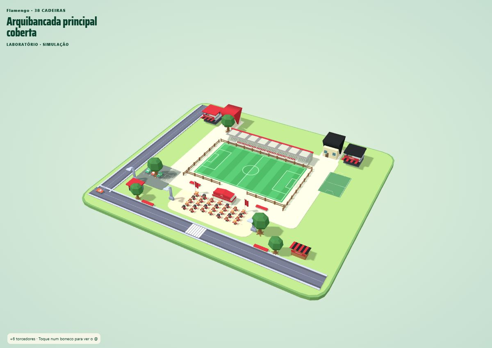
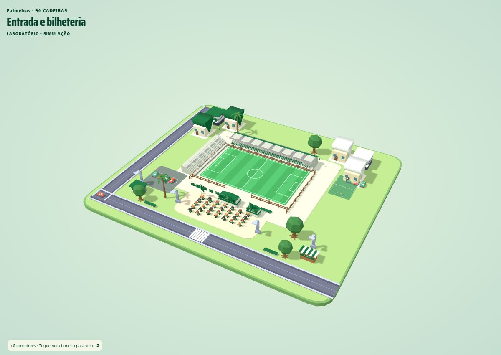
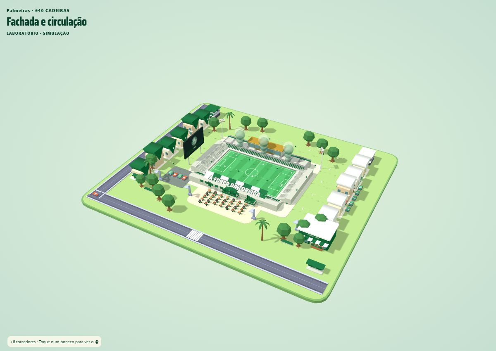

38 CADEIRAS · NÍVEL 2
Flamengo · o começo do bairro
Um lado de arquibancada coberta, cerca e bancos preservados. Comércio e circulação ainda pequenos.
Explorar Flamengo ↗DIREÇÃO DE ARTE · ESTUDO PARA APROVAÇÃO
Metas preservadas: 0 · 25 · 200 · 1.000 · 5.000. Entre as metas, os lados da arquibancada e o bairro crescem. O bairro cresce automaticamente; os itens do presidente são opcionais. Estes são exemplos visuais, sem efeito no jogo.
Campinho, um lado coberto e dois lados construídos. Medalhas redondas numeradas indicam 1º (ouro), 2º (prata) e 3º (bronze). A estrela fica reservada ao campeão da temporada. Tudo abaixo é simulação.
Agrupamento · 23 times
À frente ficam o modelo e o escudo do clube com mais cadeiras do grupo. Neste exemplo: Palmeiras, 90 cadeiras.

Um lado de arquibancada coberta, cerca e bancos preservados. Comércio e circulação ainda pequenos.
Explorar Flamengo ↗
Segundo lado de arquibancada, bilheteria e novas construções. Continua na Arquibancada até chegar a 200.
Explorar Palmeiras ↗
Explorar os cinco itens em 3D ↗
Ao ligar um item, a câmera mostra o detalhe e volta ao enquadramento anterior. No modo Leve, pessoas e carros ficam parados e a fumaça é desligada.
SIMULAÇÃO VISUAL. Contas, cargos, classificação e eventos dos laboratórios são fictícios. Os números servem para comparar desenhos e não representam o placar atual. O mapa oficial e a integração com o Instagram permanecem na versão aprovada.